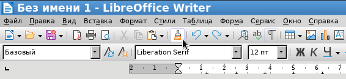

Офисный пакет LibreOffice - гигантский по своей сложности проект. Поэтому за все время существования этой программы практически небыло релизов, которые бы работали так, как нужно пользователю. Глюки, недоработки, разламывание ранее работающего функционала - это обычное дело для LO.
Достаточно простой функционал "Копировать формат" (кнопка с метелкой) в LO адекватно работал где-то в версии 3.x.x, затем его переделывали, разламывали, и к версии LO 7.x.x не каждый опытный пользователь LO знает как эту кнопку использовать (кстати, в Open Office эта кнопка нормально работала как минимум до версии 4.1).

Итак, в чем проблема? На первый взгляд, копирование форматирования работает. За исключением того, что по какой-то причине не копируются отступы, установленные в тексте-образце. Кроме того, видимо, предполагалось, что после нажатия "метелки" данная кнопка должна подсвечиваться, что говорит о том, что форматирование скопировано и можно выделять текст для применения форматирования. Но эту функциональность тоже сломали, и как минимум в версии 7.5.x так и не починили. Врочем, подсветка кнопки - это не самая большая проблема LO, можно и не обращать внимания.
Самое главное, нужно разобраться, как полноценно копировать форматирование. Так вот, для того, чтобы к конечному тексту применилось форматирование с отступами, в LO нужно зажимать клавиши-модификаторы. В зависимости от ОС и версии LO, в качестве модификатора используются либо Crtl, либо Ctrl+Shift. В этом и состоит отличие от Microsoft Office, в котором клавиши-модификаторы зажимать не надо.
Правильная последовательность действий:
При копировании форматирования надо еще учитывать следующую проблему в LO.